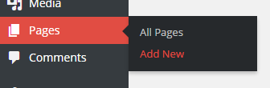
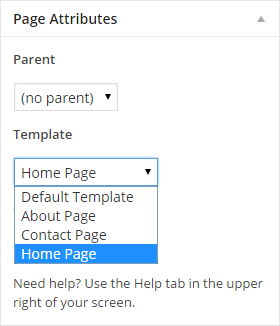
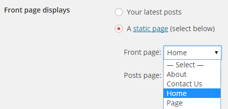
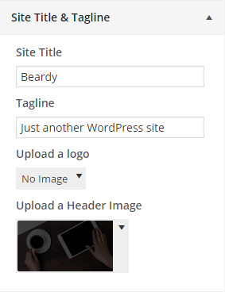
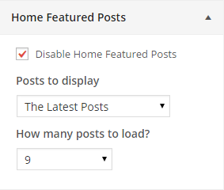
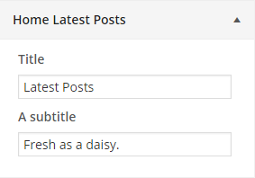
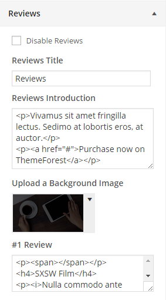

Setting the Home Page
Let's start creating the homepage. You simply need to go to Pages > Add New into your WordPress Admin Panel.

Now enter a title on it and select the Home Page Template located inside the Page Attribute's box.

Go up and Publish it. Now let's set it as Front page, go to Settings > Reading and change the Front Page Displays setting to A static page and set now select the page we've just created and save changes.

Now that is up and running let's set it up, go to Appearance > Customize.
Site Title & Tagline

Site Title: Enter the name of your site (or blog) here. This theme will display the site title, at the top of every page, and in the reader's browser titlebar. WordPress also uses this title as the identifying name for your Syndication feeds.
Tagline: In a few words, explain what your site is about. Your sites's slogan, or tagline, might be entered here. A tagline is short phrase, or sentence, used to convey the essence of the site and is often funny or eye-catching.
Upload a logo: In this field you can upload a custom logo image. We recommend something not to big to preserve the essence of the theme.
Upload a Header Image: There you are able (we challenge you) to upload a huge and cool image to fill the background of your header. This area has the parallax effect.
Home Featured Posts

Disable Home Featured Posts: If its check the carousel of featured posts from the home page will be deactivated.
Posts to display: Select the kind of post that you want to stand out.
How many posts to load?: Select from 6 to 20 posts.
Home Latest Posts

Title: Simply enter a title for the latest posts area. By default it will display "Latest Posts"
A subtitle: Enter a subtitle for the latest posts area.
Reviews

Disable Home Featured Posts: If its check the reviews area will be deactivated.
Reviews Introduction: Fill with content for the first column of the reviews area.
Upload a Background Image: There you are able to upload a image to fill the background of your header. This area has the parallax effect.
# Reviews Boxes: There you can enter each review content. Up to 10 reviews are able to be displayed.